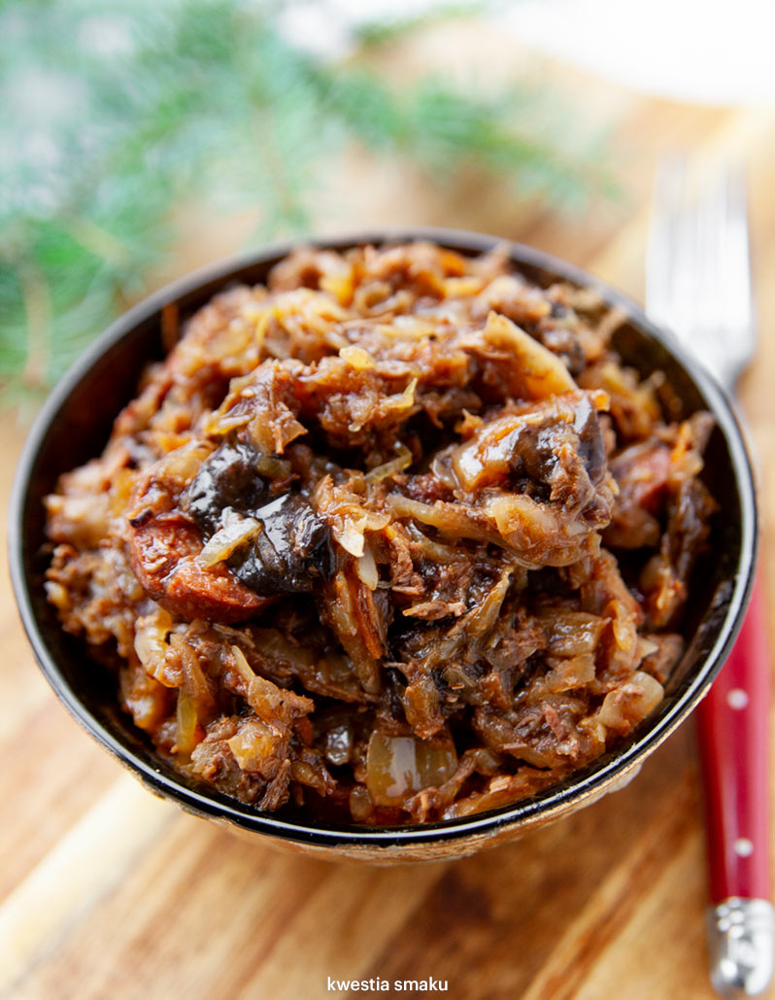
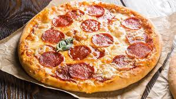
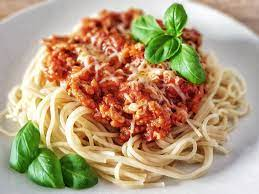
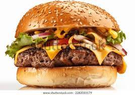
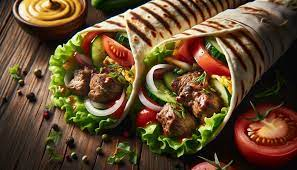

Bigos

Bigos to tradycyjne danie kuchni polskiej, często nazywane „polską kapustą”. Jego głównymi składnikami są kiszona kapusta oraz różne rodzaje mięs, takie jak kiełbasa, boczek, czy też czasami dziczyzna. Bigos jest potrawą, która zyskuje na smaku wraz z kolejnymi podgrzewaniem; uważa się, że najlepiej smakuje po kilku dniach od przygotowania, kiedy to składniki dobrze się przegryzą. Historia bigosu sięga średniowiecza, a przepis ewoluował na przestrzeni wieków. Potrawa ta jest szczególnie popularna podczas dużych rodzinnych zgromadzeń oraz świąt, takich jak Boże Narodzenie czy Wielkanoc. Bigos może być bardzo różnorodny, w zależności od regionu Polski oraz indywidualnych upodobań kucharza. Często dodaje się do niego również grzyby, cebulę, czosnek, oraz różne przyprawy, takie jak majeranek, pieprz czy liść laurowy. Bigos jest nie tylko smaczny, ale i praktyczny - jest potrawą jednogarnkową, którą można łatwo przygotować w dużych ilościach, a jej składniki są stosunkowo tanie i dostępne. Jest też potrawą wysoce energetyczną, co czyni ją idealną na zimowe miesiące.
Pizza

Pizza to jedno z najbardziej rozpoznawalnych i popularnych dań na świecie, pochodzące z Włoch. Początki pizzy sięgają antycznych czasów, ale jej nowoczesna forma zaczął kształtować się w Neapolu w XVIII wieku. To właśnie w Neapolu powstała pizza margherita, ozdobiona kolorami włoskiej flagi: czerwonym sosem pomidorowym, białą mozzarellą i zielonymi liśćmi bazylii, które miały symbolizować cześć dla królowej Margherity. Pizza charakteryzuje się swoim cienkim, chrupiącym ciastem, które jest pieczone w bardzo wysokiej temperaturze w piecu opalanym drewnem, choć w wielu miejscach na świecie piecze się ją również w piecach elektrycznych czy gazowych. Kluczowymi składnikami są sos pomidorowy i ser, a także różnorodne dodatki takie jak warzywa, mięsa czy ryby, które pozwalają na niezliczone kombinacje i smaki. Pizza stała się globalnym fenomenem i jest przygotowywana w różnych odmianach na całym świecie. Na przykład, w Stanach Zjednoczonych popularna jest pizza o grubszym cieście, tzw. deep-dish pizza z Chicago, czy bardzo cienka, chrupiąca New York-style pizza. W Polsce i innych krajach Europy również można spotkać lokalne warianty pizzy, często dostosowane do regionalnych gustów. Jest to danie, które można łatwo dostosować do indywidualnych preferencji, co czyni pizzę wyjątkowo uniwersalnym posiłkiem, równie dobrym zarówno na codzienny obiad, jak i na specjalne okazje. Pizza jest także popularnym wyborem na imprezy i spotkania ze względu na swoją prostotę, szybkość przygotowania i możliwość dzielenia się nią z innymi.
Spaghetti

Spaghetti to jeden z najbardziej znanych rodzajów makaronów pochodzących z Włoch. Są to długie, cienkie niteczki makaronu, zazwyczaj wykonane z mąki pszennej i wody. Spaghetti stanowi podstawę wielu tradycyjnych włoskich dań i jest często serwowane z różnorodnymi sosami, które mogą być na bazie pomidorów, mięsa, czy owoców morza. Jednym z najbardziej klasycznych połączeń jest spaghetti z sosem pomidorowym, znanym jako spaghetti al pomodoro. Inne popularne warianty to spaghetti alla carbonara, gdzie sos składa się z jaj, sera pecorino romano, wędzonego boczku (w oryginalnej wersji używa się guanciale, czyli wędzonego policzka wieprzowego), pieprzu i czasami śmietany. Istnieje również spaghetti aglio e olio, prosta potrawa, w której głównymi składnikami są oliwa z oliwek, czosnek, chili i pietruszka. Spaghetti jest także popularne poza granicami Włoch, stanowiąc element kuchni wielu innych krajów. Zostało przyjęte i dostosowane do lokalnych gustów, na przykład w Stanach Zjednoczonych, gdzie spaghetti często podawane jest z mięsnymi kulkami (meatballs) i nazywane "spaghetti and meatballs". Danie to nie tylko cieszy podniebienia na całym świecie swoim smakiem, ale także jest stosunkowo proste i szybkie w przygotowaniu, co czyni je idealnym wyborem dla wielu osób jako posiłek zarówno na co dzień, jak i od święta. Ponadto, spaghetti jest także cenione za swoją uniwersalność w kuchni, pozwalając na tworzenie nieskończenie wielu wariacji, zależnie od dostępnych składników i osobistych preferencji kulinarnych.
Hamburger

Hamburger to jedno z najbardziej ikonicznych dań kuchni amerykańskiej, choć jego korzenie można śledzić aż do miasta Hamburg w Niemczech, skąd w XIX wieku przybyli do USA imigranci, przynosząc ze sobą tradycję mielonego mięsa wołowego, które serwowano w formie steków. Współczesna forma hamburgera, czyli mielone mięso wołowe podawane między dwiema połówkami bułki, ukształtowała się już w Stanach Zjednoczonych. Podstawową konstrukcję hamburgera stanowi bułka, często posypana sezamem, która zawiera w sobie soczysty kotlet mielonego mięsa wołowego, często przyprawiony solą i pieprzem. Standardowe dodatki to sałata, pomidor, cebula, ogórki konserwowe oraz sosy, takie jak ketchup, musztarda czy majonez. Hamburger może być również wzbogacony o ser, boczek, awokado czy jajko. Hamburgery są niezwykle popularne na całym świecie, a ich popularność wynika z prostoty, szybkości przygotowania oraz możliwości dostosowania do indywidualnych gustów. Dania te są stałym elementem menu fast foodów, ale również przedmiotem eksperymentów w bardziej wyszukanych restauracjach, gdzie serwuje się je w wersjach gourmet, z wykorzystaniem wysokiej jakości składników i oryginalnych kombinacji smakowych. Różnorodność hamburgerów jest ogromna — od klasycznych wersji z wołowiną po wegetariańskie i wegańskie alternatywy z kotletami z warzyw, strączków czy produktów zastępujących mięso. Ich uniwersalność sprawia, że są one chętnie wybierane przez osoby w różnym wieku, stanowiąc jedno z ulubionych dań na nieformalne spotkania, imprezy i szybkie posiłki.
Kebab

Kebab to popularne danie kuchni bliskowschodniej, które zyskało międzynarodową popularność, zwłaszcza w formie szybkich posiłków na ulicach miast na całym świecie. Pochodzi z Bliskiego Wschodu, a jego nazwa wywodzi się z arabskiego słowa „kabāb”, co oznacza „pieczone mięso”. Tradycyjny kebab przygotowywany jest z różnych rodzajów mięs, takich jak wołowina, jagnięcina, kurczak czy ryby, które są marynowane w mieszance przypraw, takich jak kmin rzymski, kardamon, kolendra czy papryka, a następnie pieczone na rożnie lub szpikulcach. Współczesna wersja, znana jako kebab döner, została wynaleziona w Turcji. Polega na umieszczeniu dużego kawałka mięsa na pionowym rożnie, który obraca się wokół własnej osi, aby mięso równomiernie się grillowało. Następnie mięso jest cienko odkrajane i podawane na talerzu lub w bułce pita z dodatkami, takimi jak świeże warzywa, sosy (czosnkowy, jogurtowy) i przyprawy. Kebab stał się szczególnie popularny w wielu europejskich miastach jako posiłek „na wynos” lub „na szybko”. Jego popularność wynika z intensywnego smaku, możliwości szybkiego przygotowania i stosunkowo niskiej ceny. Ponadto, kebab jest bardzo uniwersalny, co pozwala na łatwe dostosowanie go do lokalnych upodobań kulinarnych, dzięki czemu można go znaleźć w różnych wariantach na całym świecie. Choć kebab jest często kojarzony z fast foodem, jego korzenie sięgają tradycyjnych metod gotowania, które wymagają znacznego kunsztu i wiedzy o przyprawach. W niektórych krajach, jak Turcja czy Iran, kebab jest daniem celebracyjnym, podawanym podczas uroczystości i większych spotkań rodzinnych, co świadczy o jego bogatej kulturowej wartości.